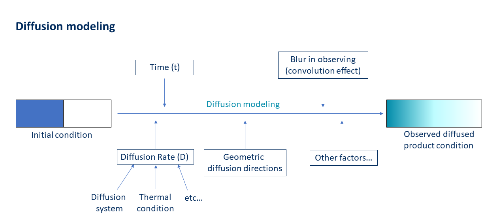

About
What is DIFFUSUP?
DIFFUSUP is a free and open-source software with a user-friendly graphical user interface (GUI) designed for conducting diffusion modeling.
Originally developed to model geological process timescales recorded in garnet diffused profiles, the software has been extended to support diffusion modeling in other research areas.
DIFFUSUP provides various functions to accommodate different diffusion models, including the ability to simulate multi-component diffusions under different thermal and boundary conditions.
Users can customize their diffusion simulations using the available features.

More about DIFFUSUP could be found in the instruction.
What can DIFFUSUP do?
DIFFUSUP is a highly flexible software for conducting diffusion modeling.
The inputs required for the software include the initial conditions of the products before diffusion and diffusion rates, while the outputs are the simulated product conditions after diffusion.
There are two primary tasks that DIFFUSP is ideal for:
(1) Modeling unknown conditions, such as time or diffusion rate, in the diffusion process by simulating the observed diffused product and using other known diffusion conditions.
(2) Predicting the outcome of the diffusion process by inputting all the relevant diffusion conditions.
Examples of DIFFUSUP's modeling capabilities can be found in the software's instruction and example pages.
In addition to simulating diffused products and deriving unknown diffusion conditions, users are encouraged to explore other potential applications of DIFFUSUP for their individual needs.
How does DIFFUSUP work?
The theory behind diffusion and the algorithm used in DIFFUSUP can be downloaded here.
As the Crank-Nicolson method often involves sparse matrix inversion, we chose to use the convenient '\' method and App Designer in MATLAB for developing DIFFUSUP.
We designed the software's graphical user interface (GUI) and wrote it in MATLAB's App Designer.
DIFFUSUP is provided as a free and stand-alone software that can be download by users.
Why choosing DIFFUSUP?
Simple
GUI
Flexible
Convenient
Free
Contact us!
If you want to learn more about DIFFUSUP, provide feedback or comments, report any bugs, or simply wish to contact the authors for any reason,
please contact us right now!
We will do our best to respond to your inquiries in a timely manner.